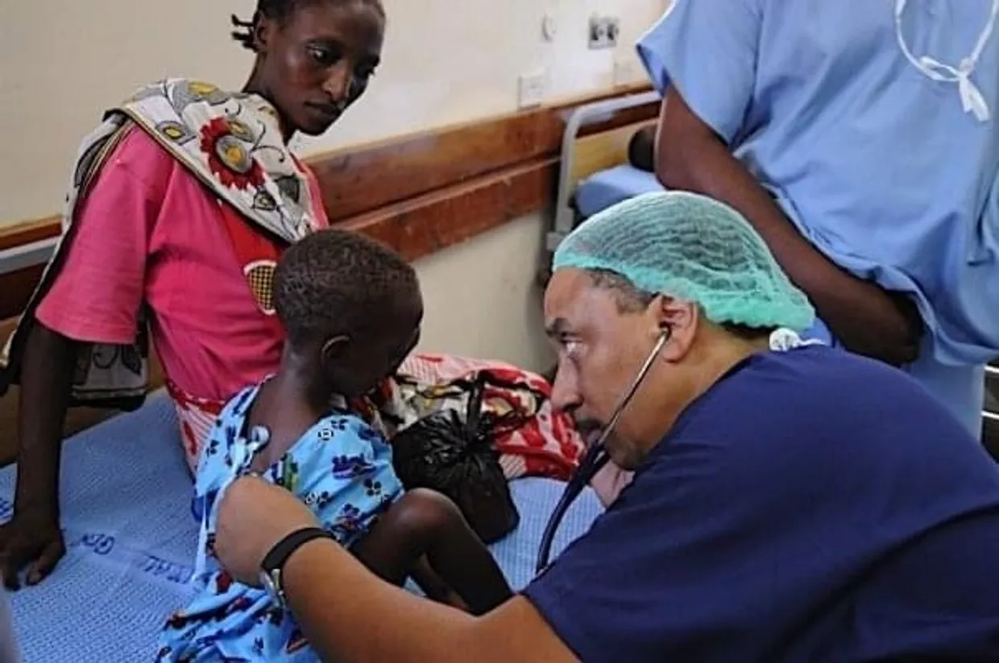
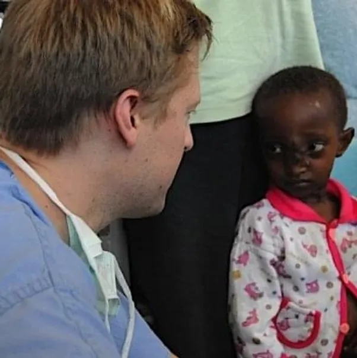
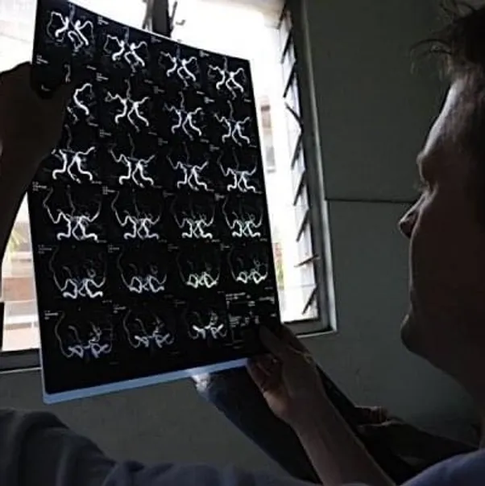

Ruben J. Williams is committed to positively impact the training of surgeons and anesthesiologists in East Africa, by facilitating a global exchange of ideas, advances, and skills in the medical field.

The Ruben J. Williams Foundation is a nonprofit 501(c)(3) organization founded in 2005. Its primary concern is addressing the disparities in the provision of surgical/critical health care in developing countries, with a specific emphasis on Eastern Africa. The founders and directors represent three continents and were brought together by a common vision for addressing specific obstacles that face surgical trainees, surgeons, and academic and nursing staff practicing in regions where the environment offers comparatively fewer research and funding opportunities.
Ruben J. Williams Foundation (RJW) provides health care in resource constrained environments. Using a collaborative model, we bring experts together to help under-served populations. Our work includes taking part in missions to highlight areas that need the most help.
A big part of what we do is identifying those developing countries where medical inroads are needed. Since our inception, a variety of distinguished lecturers have helped us bring awareness of the problem to the worldwide health care community.

RJW is concerned with establishing links between academic organizations, and hospitals along with the University of Michigan, University of Washington, and University of Pittsburgh for further specialist training on both sides of this divide. In so doing, the foundation seeks to host visiting surgeons from North America and Europe on short-term academic visits to Kenya that are comprised of conducting a two-day university and public lecture program, a two-day elective surgery schedule, a one-day research symposium, and various cultural exchange tours and appearances. It is the intention of the foundation to create an academic surgical/anesthesiology professional network that will encourage a free flow of academic thought, research, and personnel. This joint effort will enhance the training and practice of surgery in Africa while simultaneously providing visiting surgeons a unique cultural and professional exchange opportunity. This further involves curriculum design and enhancement and establishing an international lecture and research network collaborative in surgery, critical care, and nursing.
The ultimate goal is to establish an academic surgical/anesthesiology professional network that encourages the free flow of academic thought, research, and personnel. This initiative aims to enhance surgical training and practice in Africa while offering a unique cultural and professional exchange for visiting surgeons. The foundation also focuses on curriculum design, enhancement, and establishing an international lecture and research network in surgery, critical care, and nursing.
